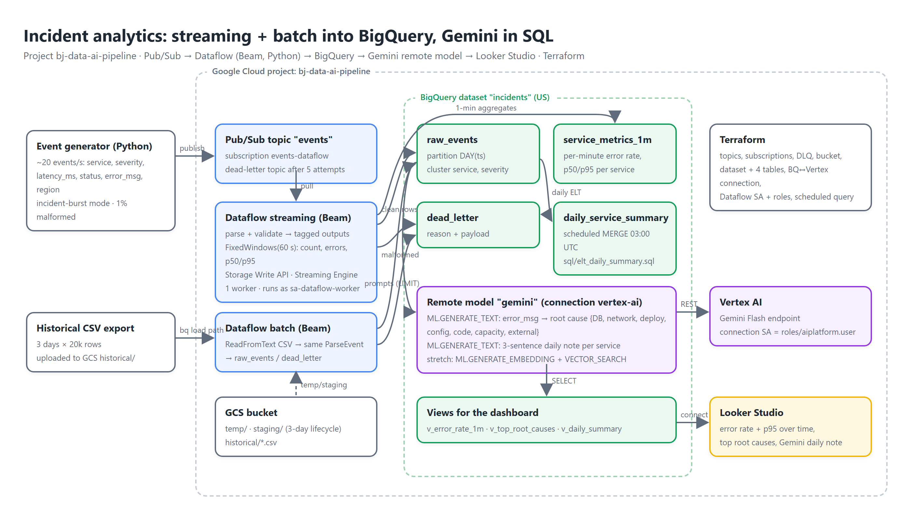

Google Cloud portfolio · Project 3 of 3
Application events stream through Pub/Sub into a Dataflow pipeline that validates, windows and lands them in BigQuery; a batch job backfills history; scheduled SQL builds daily summaries; and Gemini, called from SQL through a BigQuery remote model, classifies root causes and writes incident notes. Looker Studio sits on top. Terraform builds all of it.
Narrated walkthrough: event burst → Dataflow job graph → rows arriving in BigQuery → 1-minute error-rate spike → Gemini root causes and daily notes → dashboard.
Transcript: demo/transcript.md · Captions: demo/captions.srt.

deploy.sh.Realistic event mix at ~20/s with an incident-burst mode and 1% malformed payloads. A dead-letter topic catches messages that fail delivery 5 times.
Streaming: parse → validate → BigQuery via the Storage Write API, plus 60-second windows per service. Batch: CSV backfill through the same transform. Dedicated worker service account, Streaming Engine, 1-2 workers.
Day-partitioned, clustered tables; dead-letter table with reasons; daily summary from a scheduled MERGE; thin views for the dashboard.
ML.GENERATE_TEXT in SQL over a cloud-resource connection: root-cause category per distinct error, 3-sentence daily note per service, optional embeddings + VECTOR_SEARCH.
One ParDo with tagged outputs decides good vs bad; everything downstream is standard Beam.
ts, non-empty service, severity in {DEBUG, INFO, WARN, ERROR, CRITICAL}, latency 0-600 s. Everything else is written to dead_letter with the exception text, never dropped.Exactly-once streaming inserts at lower cost than the legacy streaming API; the batch job uses file loads.
Each minute's metrics are emitted once; late events (up to 120 s) produce a corrected pane instead of holding the window open.
batch_backfill.py imports ParseEvent from the streaming module, so historical data obeys the same schema rules.
test_pipeline.py runs the parse and window-aggregate steps on the DirectRunner with assert_that.
| Table | Written by | Layout | Purpose |
|---|---|---|---|
raw_events | streaming + batch | partition DAY(ts), cluster service, severity | Every valid event; the source for ELT and Gemini prompts. |
service_metrics_1m | streaming | partition DAY(window_start), cluster service | Per-minute events, errors, error rate, p50/p95 latency. |
dead_letter | streaming + batch | partition DAY(received_at) | Malformed records with the reason and raw payload. |
daily_service_summary | scheduled query (03:00 UTC) | partition DAY(day) | Daily events, errors, error rate, p95, top error, regions (MERGE, idempotent). |
error_root_cause | ML.GENERATE_TEXT | small | Distinct error message → category, occurrences, services. |
daily_incident_summary | ML.GENERATE_TEXT | small | 3-sentence SRE note per service per day. |
The model lives in BigQuery as a remote model; prompts are built with SQL; results are tables.
CREATE MODEL IF NOT EXISTS `incidents.gemini`
REMOTE WITH CONNECTION `US.vertex-ai`
OPTIONS (ENDPOINT = 'gemini-3.8-flash');
SELECT error_msg, occurrences, TRIM(ml_generate_text_llm_result) AS root_cause
FROM ML.GENERATE_TEXT(
MODEL `incidents.gemini`,
(SELECT error_msg, occurrences,
CONCAT('Classify this production error into exactly one of: DB, network, deploy, config, code, capacity, external. Reply with the word only.\n\nError: ', error_msg) AS prompt
FROM distinct_errors), -- top 200 distinct messages by occurrences
STRUCT(0.0 AS temperature, 256 AS max_output_tokens, TRUE AS flatten_json_output));Deduplicate first (distinct messages, not rows), cap with LIMIT, and run it once a day. Note: Gemini 3.x reasons before answering and those tokens count against max_output_tokens, so a 16-token cap returned NULL for some rows; 256 is the working floor for a one-word answer.
temperature 0 and an explicit closed list make the category usable as a dimension in the dashboard.
The connection's service account is the only principal that can call Vertex AI from BigQuery; it has exactly roles/aiplatform.user.
ML.GENERATE_EMBEDDING over error messages and VECTOR_SEARCH to find the five closest past incidents to a new one.
Looker Studio over three thin views so the report never scans raw_events. Live report: Incident Analytics (unlisted link, viewer access).
Time series of error rate and p95 per service for the last 7 days: the incident burst is the obvious spike.
Gemini categories by occurrences with example messages, as a bar chart.
Daily numbers joined with the Gemini note, as a table.
| Item | Decision |
|---|---|
| Dataflow identity | Dedicated sa-dataflow-worker (dataflow.worker, bigquery.dataEditor/jobUser, pubsub.subscriber/viewer, objectAdmin on the one bucket); not the Compute default SA. |
| BigQuery ↔ Vertex | Cloud-resource connection whose SA has only roles/aiplatform.user. |
| Dataset ACL | Explicit special groups + the worker SA; the org's domain-restricted sharing rejects consumer accounts in dataset ACLs, so the provider default (creator by email) is not used. |
| Worker networking | No external IPs (--no_use_public_ips; the org denies compute.vmExternalIpAccess). Dedicated dataflow-vpc subnet with Private Google Access; firewall allows only worker-to-worker 12345-12346. No Cloud NAT: the pipeline needs nothing from the public internet, so the SDK image is used as-is without a requirements_file. |
| Keys | None. Jobs are launched with the operator's ADC; workers use the attached SA. |
| Bucket | Uniform access, public access prevention, 3-day lifecycle on temp/staging. |
| Cost | Streaming Engine + 1 worker (~₹25/hour) is the only meaningful cost; ./deploy.sh stop drains it. BigQuery and Pub/Sub stay in the free tier at this volume; Gemini is bounded by LIMITs. |
Full from-zero runbook (org-policy overrides, Java for Beam, Looker Studio steps, teardown): REBUILD.md.
./deploy.sh infra: Pub/Sub, GCS, BigQuery dataset/tables, the Vertex AI connection, the worker SA and the scheduled query../deploy.sh stream launches the Dataflow job (Streaming Engine, 1-2 workers); it is Running after ~3 minutes../deploy.sh generate: 4 minutes at 20 events/s with a 90-second incident on checkout../deploy.sh backfill: 60k historical rows through the batch job../deploy.sh elt, ./deploy.sh gemini, ./deploy.sh views../deploy.sh stop (drain) then ./deploy.sh destroy.The Terraform provider adds the creating user to a new dataset's ACL. With domain-restricted sharing enforced, a gmail creator makes the create call fail; explicit access blocks fix it.
The first Dataflow jobs died with compute.vmExternalIpAccess violated. The fix is not to loosen the policy: run workers without public IPs in a subnet with Private Google Access, and drop the PyPI requirements_file so no NAT is needed.
Beam's STORAGE_WRITE_API writer is a cross-language transform; the machine that submits the job needs a JDK for the expansion service even though the pipeline is Python.
Tests took minutes the first time because the portable Prism runner downloads itself; it is fine afterwards, and the DirectRunner is still available for quick loops.
Pub/Sub's DLQ handles delivery failures; the dead_letter table handles bad data. They answer different questions and both are queryable.
A per-minute aggregate table costs almost nothing to query and makes the incident burst visible without touching raw_events.